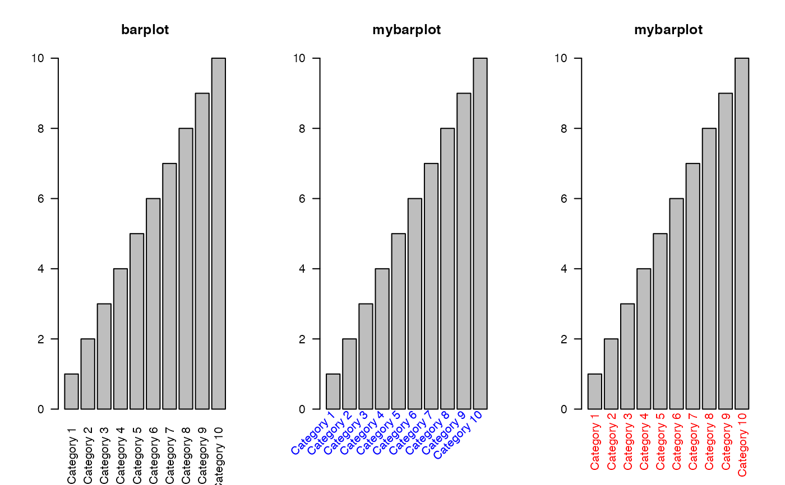

barplot function allowing to set label and axis arguments, e.g. rotation of labels, giving a unit to the axis values
mybarplot(height, names.arg = NULL, cex.axis = graphics::par("cex.axis"), cex.names = graphics::par("cex.axis"), ..., args.text = NULL, args.yaxis = NULL)
Arguments
| height | as in |
|---|---|
| names.arg | as in |
| cex.axis | character expansion factor of axis labels |
| cex.names | character expansion factor of bar group labels |
| ... | additional arguments to barplot |
| args.text | list of arguments that are given to |
| args.yaxis | list of arguments that are given to |
Value
Returns (invisibly) what barplot returns: the x positions of the
bars that have been plotted
Examples
height1 <- structure(1:10, names = paste("Category", 1:10)) height2 <- matrix( 1:12, nrow = 3, dimnames = list( c("A", "B", "C"), paste("Long cateogry name", 1:4)) ) graphics::par(mfrow = c(1, 2)) # In the simplest form, mybarplot does what barplot does... x1 <- graphics::barplot(height1, main = "barplot") x2 <- mybarplot(height1, main = "mybarplot")# ... and gives the same result identical(x1, x2) #> [1] TRUE # We cannot distinguish the labels. With mybarplot we have finer access to the # labels, such as rotation, yposition and adjustment graphics::par(mfrow = c(1, 3)) graphics::barplot(height1, las = 2, main = "barplot") mybarplot(height1, las = 2, main = "mybarplot", args.text = args_text(srt = 45, y.abs = -1, col = "blue")) mybarplot(height1, las = 2, main = "mybarplot", args.text = args_text(srt = 90, y.abs = 10, col = "red"))  # Concerning the y-axis, you may e.g. give a unit to the values or modify the # positions at which to draw ticks graphics::par(mfrow = c(1, 1)) mybarplot(height1, las = 2, cex.names = 0.8,, args.text = args_text(srt = 90, y.abs = -0.5), args.yaxis = args_yaxis(at = 0:10, unit = " %", col.axis = "blue")) graphics::par(mfrow = c(1, 2)) graphics::barplot(height2, main = "barplot", cex.names = 0.8) mybarplot(height2, main = "mybarplot", cex.names = 0.8, args.text = args_text(srt = 30)) graphics::barplot(height2, las = 1, main = "barplot", beside = TRUE, cex.names = 0.8) mybarplot(height2, las = 1, main = "mybarplot", beside = TRUE, cex.names = 0.8, args.text = args_text(srt = 30))